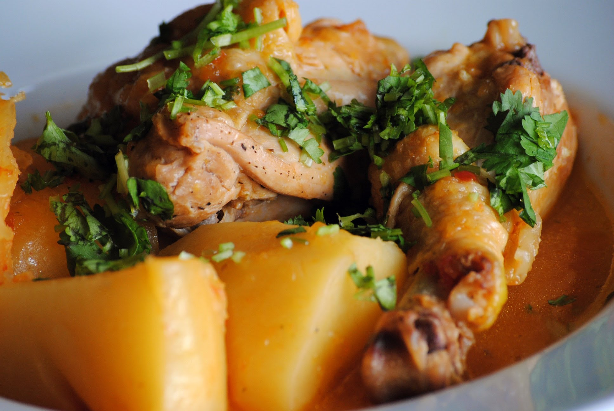
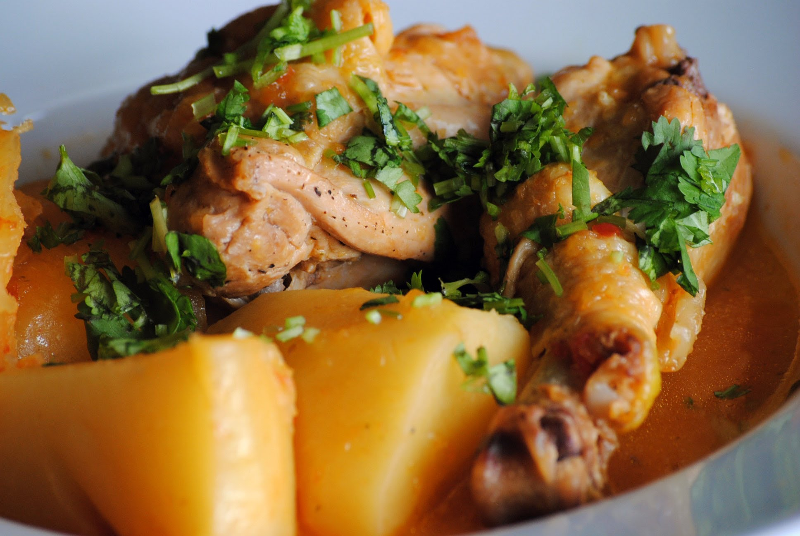

Prova la gastronomia colombiana. Aquell que es trobi realitzant turisme a Colòmbia no ha de deixar de banda gastronomia del país, part important de la seva identitat cultural. La cuina colombiana és el resultat de la fusió d’influències espanyoles, indoamericanes i africanes.
 


L’arepa (una coca circular feta de massa de blat de moro) i el sancocho (sopa a base de verdures, tubercles, carns i condiments) són comuns a tot el país, mentre que hi ha especialitats que es restringeixen a certes regions. Entre aquestes destaca la safata paisa, típica d’Antioquia. Aquest enorme plat porta carn, chicharrón, ou fregit, xoriço antioqueño, arepa, fesols, tomàquet, alvocat, arròs blanc i rodanxes de plàtan madur. Si aconsegueixes acabar-te una safata paisa tu solet, et concedeixen la nacionalitat colombiana sense necessitat de paperassa.